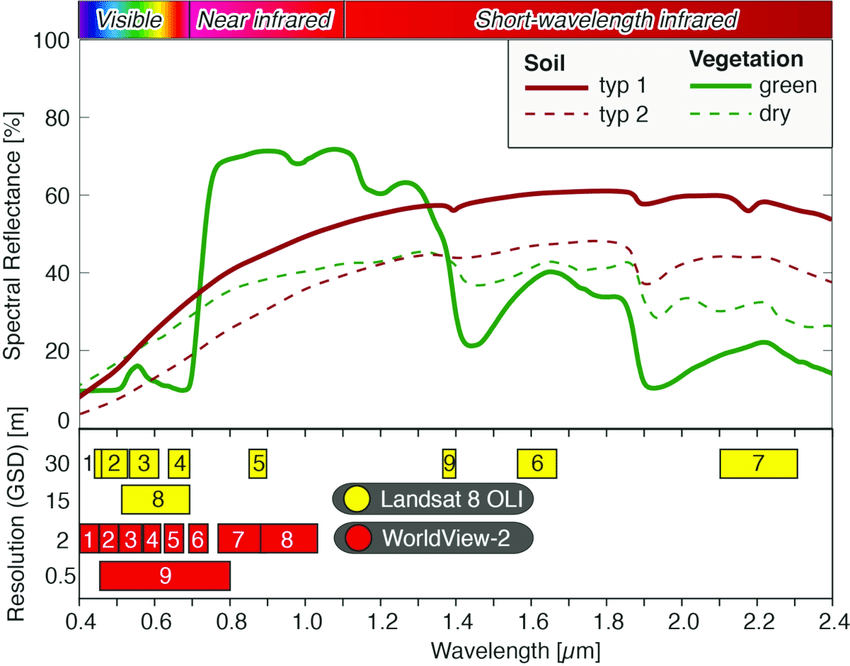

Introduction to Multispectral Satellite Imagery#
Free multispectral satellite imagery is available for most of the planet through the Landsat program (NASA and USGS) and the Sentinel program (European Space Agency). The spatial resolution ranges from 15-30 m in the former and 10-60 m in the latter. Data are available for download from USGS Earth Explorer and the Copernicus Browser.
Introduction to Landsat Imagery#
The Landsat program is a joint NASA and USGS program and the longest running satellite imagery enterprise in the U.S. and the world. The program has so far launched 9 satellites since 1972 with Landsat 1 through 2021 with Landsat 9. The spatial resolution varies from 15 to 100 m, and the temporal resolution (meaning the time it takes for the same location to be photographed) is approximately 16 days. Landsat imagery is divided into scenes each measuring approximately 185 x 185 km.
The main instrument consists of a multispectral scanner that records data in separate bands. The specific wavelength ranges differ across missions, but the multispectral scanners typically record information across the visible (blue, green, red), near infrared (NIR), short wave infrared (SWIR), and thermal infrared (TIR) spectrum.

Photo credit: Victor Blacus
{kind=link}
The most recent Landsat missions (7, 8, and 9) have the highest quality data. The bands and their corresponding wavelengths are shown below.
Landsat-7 ETM+ Bands (µm) |
Landsat-8 OLI and TIRS Bands (µm) |
Landsat 9 OLI and TIRS-2 Bands (µm) |
||||
|---|---|---|---|---|---|---|
30 m Coastal/Aerosol |
0.435-0.451 |
Band 1 |
0.433-0.453 |
|||
Band 1 |
30 m Blue |
0.441-0.514 |
30 m Blue |
0.452-0.512 |
Band 2 |
0.450-0.515 |
Band 2 |
30 m Green |
0.519-0.601 |
30 m Green |
0.533-0.590 |
Band 3 |
0.525-0.600 |
Band 3 |
30 m Red |
0.631-0.692 |
30 m Red |
0.636-0.673 |
Band 4 |
0.630-0.680 |
Band 4 |
30 m NIR |
0.772-0.898 |
30 m NIR |
0.851-0.879 |
Band 5 |
0.845-0.885 |
Band 5 |
30 m SWIR-1 |
1.547-1.749 |
30 m SWIR-1 |
1.566-1.651 |
Band 6 |
1.560-1.660 |
Band 6 |
60 m TIR |
10.31-12.36 |
100 m TIR-1 |
10.60-11.19 |
Band 10 |
10.30-11.30 |
100 m TIR-2 |
11.50-12.51 |
Band 11 |
11.50-12.50 |
|||
Band 7 |
30 m SWIR-2 |
2.064-2.345 |
30 m SWIR-2 |
2.107-2.294 |
Band 7 |
2.100-2.300 |
Band 8 |
15 m Pan |
0.515-0.896 |
15 m Pan |
0.503-0.676 |
Band 8 |
0.500-0.680 |
30 m Cirrus |
1.363-1.384 |
Band 9 |
1.360-1.390 |
Earlier missions (Landsat 1-5) might be useful for historic purposes, and their bands and corresponding wavelengths are available here. The Landsat 6 mission failed to reach orbit.
Landsat 8 and 9 data are delivered in a 16-bit unsigned format, while earlier Landsat imagery is delivered in an 8-bit unsigned format. To convert these digital numbers to reflectance values for subsequent analyses, refer to scale factors provided by the USGS. For Landsat 8 and 9, the scale factor is 0.0000275 with an offset of -0.2.
Band Compositing#
Multiband imagery can be visualized with different band combinations using the red, green, and blue additive color model. In this system, 3 bands can be viewed at one time, each displayed as red, green, or blue. A fourth channel, alpha, can be optionally blended on top of the 3 traditional bands.
Band composites can be referenced with the 3 numbers each representing the relevant band, in order of red, green, or blue. The band combination 4-3-2, therefore, indicates that Band 4, Band 3, and Band 2 will be displayed as red, green, and blue, respectively. In Landsat 8 and 9, Band 4 is red, Band 3 is green, and Band 2 is blue, meaning that when displayed as 4-3-2, we are viewing the visible spectrum or true color of the image.
{kind=link}
Different materials, for example, vegetation, water, soil, rock, etc., reflect the electromagnetic spectrum differently. Spectral reflectance is the ratio of the amount of light reflected by a surface to the amount of light that hits it at different wavelengths. A spectral reflectance curve shows the variations in spectral reflectance across different wavelengths and materials.
The following spectral reflectance curves show reflectance values for different materials at different wavelengths and Landsat bands (Landsat 7 above and Landsat 8 and 9 below):

Photo credit: SEOS eLearning
{kind=link}
Photo credit: Wulf et al. 2015
Here are some useful band combinations in Landsat 8 and 9:
Natural Color |
4-3-2 |
Shortwave Infrared (Urban) |
7-6-4 |
Color Infrared (Vegetation) |
5-4-3 |
Agriculture |
6-5-2 |
Atmospheric Penetration |
7-6-5 |
Healthy Vegetation |
5-6-2 |
Land/Water |
5-6-4 |
Natural with Atmospheric Removal |
7-5-3 |
Shortwave Infrared |
7-5-4 |
Vegetation Analysis |
6-5-4 |
Geology |
7-6-2 |
Bathymetric |
4-3-1 |
Forest Fires |
7-5-2 |
Bare Earth |
6-3-2 |
Vegetation/Water |
5-7-1 |
Archaeology (Parcak/Egypt) |
5-4-3 |
Archaeology (Saturno/Guatemala) |
5-3-2 |
See also: ESRI, NV5, GIS Geography, Open Weather
Here is a false color composite using Bands 5-3-2:
{kind=link}
Band Ratios#
Computing band ratios can also highlight features. Band ratios are calculated by dividing a band with a high reflectance value for a specific material by the band with a low reflectance value for that same material. In Landsat 8, the Band 5 / Band 4 ratio will highlight vegetation, Band 7 / Band 1 will highlight soil, and Band 1 / Band 5 or Band 2 / Band 6 will highlight water.
Here is a ratio of Band 5 / Band 4, with vegetation on the white end of the color scheme:
{kind=link}
Band ratios can also eliminate issues discerning features in high shadow areas. In the following image deciduous and coniferous forest have different spectral reflectance in sunlit vs. shaded areas, but when the ratio is calculated, this discrepancy is fixed.

Photo credit: Middlebury Remote Sensing
Vegetation indices (NDVI)#
Building off the idea of band ratios, several indices can be calculated by performing map algebra to combine different bands. The Normalized Difference Vegetation Index (NDVI) is an example that transforms multiband data into a single raster that represents no vegetation (-1) to high vegetation (1).
We can calculate the NDVI using the following formula:
We can visualize the NDVI with a green color scheme.
{kind=link}
Creating a Final Composite#
Multiple bands (including any of the original bands and derivatives) can be combined into a new multiband image. Theoretically, an infinite number of bands could be combined into a composite, but researchers should select the most useful bands for their application. Although the human eye can only view 3 bands at once (with perhaps a 4th alpha channel), classification algorithms can easily work with multidimensional data.
Here are some examples of multiband false color composites:

True Color RGB (left) and 5-3-2 composite (right), Southeastern Chiapas, Mexico
4/3/17, 16:23:16 Landsat 8,
CORNER_UL_LAT = 16.95093
CORNER_UL_LON = -91.54527
{kind=link}
First order Principle Components Analysis of 5-3-2 composite (left), Textural variance of PCA1 (center), NDVI (right)
{kind=link}
Preliminary interpretation:
Final composite: Var (red)-NDVI (green)-PCA1 (blue)
Green – vegetation
Light green – healthy vegetation
Dark green – recently burned areas
Greenish white – lower vegetation
Whitish green – agriculture
Greenish brown – murky water Blue – water, urban, and bare earth
Dark blue – water
Bright blue – sandy beaches
Blue to magenta – exposed bedrock
Various shades of blue – urban and land use Red – shorelines and immediate land use changes